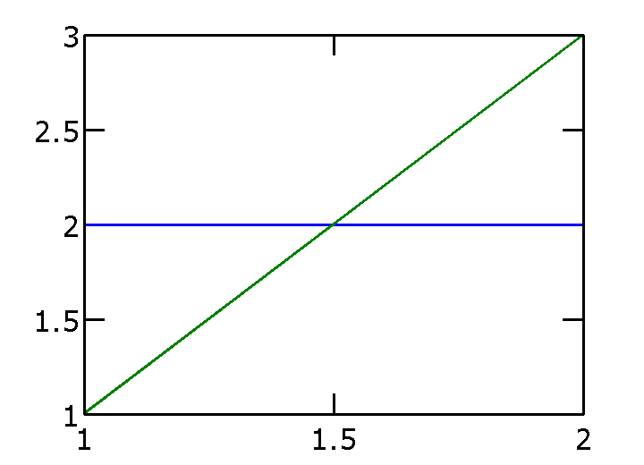

Combinded Plots
Explains how to combine several plots, e.g. plotting on the top of an inverse pole figure some important crystall directions.
| On this page ... |
| General Principle |
| Combine Different EBSD Data |
| Combine Smooth ODF Plots with EBSD Data Scatter Plots |
| Add Miller Indece to a Inverse Pole Figure Plot |
General Principle
In order to tell MATLAB to plot one plot right on the top of an older plot one has to use the commands [[matlab:doc hold,hold all]] and hold off. Let demostrate this at a simple example.
plot([2 2]) hold all plot([1 3]) hold off
Combine Different EBSD Data
First we want to show up two different EBSD data sets in one plot
lets simualted some EBSD data
cs = symmetry('-3m'); ss = symmetry('triclinic'); odf = unimodalODF(orientation('euler',0,0,0,cs,ss)); ebsd = simulateEBSD(odf,100); ebsd_rotated = simulateEBSD(rotate(odf,rotation('Euler',60*degree,60*degree,0*degree)),100);
Undefined function or method 'symmetry' for input arguments of type 'char'.
Error in ==> CombinedPlots_demo at 28
cs = symmetry('-3m'); ss = symmetry('triclinic');
plot them as a scatter plot in axis / angle parametrized orientation space
scatter(ebsd) hold all scatter(ebsd_rotated); hold off
a second way would be to superpose the pole figures of both EBSD data sets.
h = [Miller(0,0,0,1,cs),Miller(1,0,-1,0,cs)]; plotpdf(ebsd,h,'antipodal','MarkerSize',4) hold all % keep plot plotpdf(ebsd_rotated,h,'MarkerSize',4); hold off % next plot command deletes all plots
Combine Smooth ODF Plots with EBSD Data Scatter Plots
You can also combine a contour plot of a model ODF with a scatter plot of single orientations.
plotpdf(odf,h,'antipodal','contourf','gray','grid') hold all plotpdf(ebsd,h,'antipodal','MarkerSize',5,'MarkerColor','b','MarkerEdgeColor','w') hold all plotpdf(ebsd_rotated,h,'MarkerSize',5,'MarkerColor','r','MarkerEdgeColor','k'); hold off hh = legend({'EBSD 1','EBSD 2'},'units','normalized','position',[0.022 0.9 0.1 0.08]);
and, of course, you can do the same with ODF plots:
plotodf(odf,'gray','sections',8) hold all plotodf(ebsd,'MarkerSize',8,'MarkerColor','b','MarkerEdgeColor','w') hold all plotodf(ebsd_rotated,'MarkerSize',8,'MarkerColor','r','MarkerEdgeColor','k'); hold off
Add Miller Indece to a Inverse Pole Figure Plot
Next we are going to add some Miller indece to an inverse pole figure plot.
close all; plotipdf(odf,xvector,'gray'); hold all % keep plot plot(Miller(1,1,-2,0,cs),'all') plot(Miller(0,1,-1,0,cs),'all') plot(Miller(0,1,-1,1,cs),'all') hold off % next plot command deletes all plots set(gcf,'position',[100,100,300,220]);